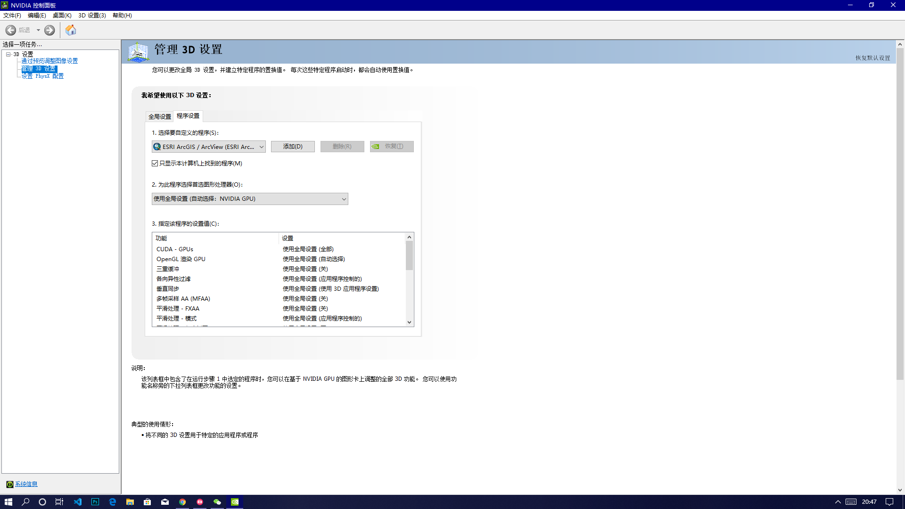
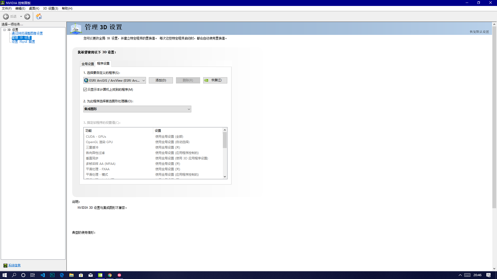

解决在windows中Arcmap 10.6卡顿问题
windows 10系统中，Arcmap 10.6在进行地图移动、缩放等操作时有明显的卡顿掉帧，看起来非常不爽，不知道同学们有没有遇到过。如下（GIF图录制完成后播放被加快使其看起来比较流畅，实际播放时间应乘以2倍左右）：

稍加思索了一下，可能是遇到N黑了。打开NVIDIA控制面板-管理3D设置-程序设置，查看arcmap使用的图形处理器：

可见，笔者此处自动选择了NVIDIA（英伟达） GPU，我们将其修改为集成显卡：

再来测试一下卡顿情况（同样GIF图被加快播放了）：

可见，设置为集成显卡后反而得到了更流畅的效果。由于GIF录制软件的缺陷，无法按正常速度播放，arcmap不支持实时显示帧率（又不是游戏），根据我的经验，应该相差20帧左右。可能有两个原因，原因一：arcmap属于N黑类软件，也就是并没有得到针对N卡的显卡优化。原因二：arcmap是专业软件，而笔者的N卡是游戏显卡，不是专业显卡。如果你碰巧遇到这个问题，可以尝试一下以上做法。没有NVIDIA控制面板的可以在应用商店中搜索 NVIDIA Control Panel。